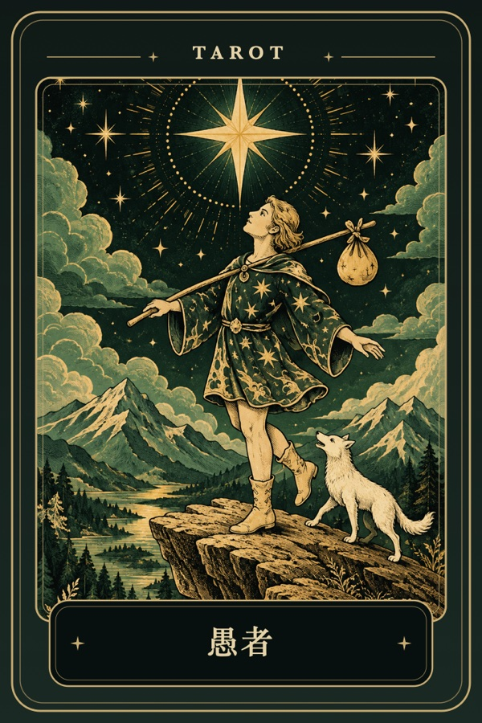

MYSTIC DAILY
历史
YOUR DAILY RITUAL
今天，有什么值得你看见？
每天一次。揭开两张牌，留下一句属于今天的话。
✦
TAROT
点击揭开
TAROT

00
ᚱ
RUNE
点击揭开
✦
RUNE
✦
✦
✦
❧
❧
ᚱ
先揭开塔罗牌
今天的组合一旦生成，之后不会重新抽取。
TODAY'S MESSAGE
查看牌面解释
A QUESTION FOR YOU
记录今天的感受
0/300
保存今天
Need a quick answer?
Ask Mystic →
QUICK ANSWER
Ask Mystic
×
想清楚一个只能回答「是 / 否」的问题。以点击瞬间的时间起卦，每日最多 3 次。
输入一个可以回答是或否的问题
今日剩余 3 次
结果不保存
以此刻起卦
你的问题
小六壬在这里作为传统文化灵感与娱乐体验；问题与结果不会保存。
RECENT
最近的日子
View all
← Today
‹
›
日
一
二
三
四
五
六
清空所有本地记录